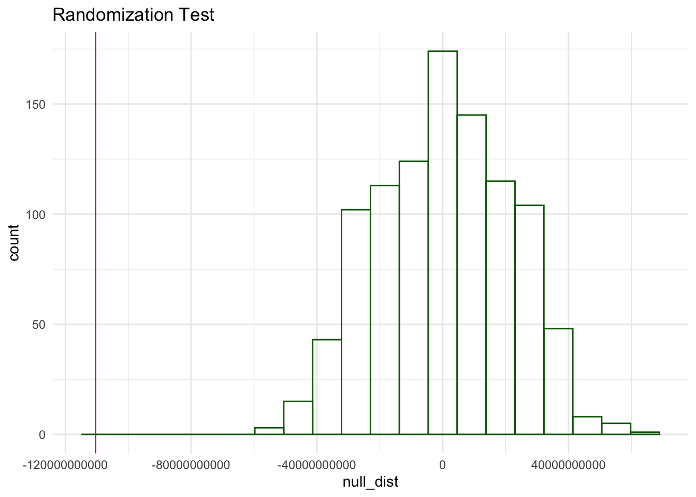

library(tidyverse)
library(here)
library(janitor)
library(modelr)
library(knitr)
library(broom)
options(scipen = 999)Hydrogen Potential in the United States
Background: Hydrogen fuel cells powered by solar and wind power is a huge possibility in the transition for a low carbon society. The Biden administration invested $7 billion in seven green hydrogen hub projects as a pathway for decarbonization and potentially reaching net zero emissions by 2050.
Electrolysis is the process in which electricity is used to split water molecules into hydrogen and oxygen. There are several potential health implications for this energy process, when powered by natural gas. This process by which steam methane reforming is used emits potent greenhouse gases.
However, electrolysis can also be fueled by renewable power. This is known as green hydrogen, and it does not require fossil fuels nor results in greenhouse gas emissions. According to the Natural Resources Defense Council (NRDC), ’while the technology is still in the early stages, falling renewable energy prices, along with the decreasing costs of the electrolyzers themselves and the clean hydrogen tax credit within the Inflation Reduction Act (IRA), could make this type of electrolysis cost competitive with other methods” (NRDC).
Analysis Questions:
Is there a higher overall potential for green hydrogen with wind or solar?
As population and area increases, does the potential for hydrogen fuel increase as well?
Load libraries
Import data
solar_h2_potential <- read_csv(here('data', 'H2_Potential_from_Solar', 'H2_Potential_from_Solar.csv'))
wind_h2_potential <- read_csv(here('data', 'H2_Potential_from_Wind', 'H2_Potential_from_Wind.csv'))About the Data
This data was accessed through the National Renewable Energy Laboratory (NREL). NREL provided two datasets of the hydrogen utility potential generated from both wind and solar. The metadata states in explicit detail that the amount of wind and solar power required to produce 1 kg of Hydrogen is 58.8 kWh. Due to these conversion rates being the same, I was able to compare these resources across one joined dataset.
In this code chunk, I began with a full join of both my solar hydrogen potential and wind hydrogen potential dataframes. For consistency, I used clean_names() with the janitor package. Both dataframes are organized by state, area in square km, population in 2010, and hydrogen potential in kg per year. I grouped by state so that I could take the sum of each column that I am interested in, removing all NA values. I made sure to ungroup() to avoid errors later on. I needed to pivot my data frame into utility potential in kg per year and type of renewable resource that produced the hydrogen.
h2_potential <- full_join(solar_h2_potential, wind_h2_potential) |>
clean_names() |>
group_by(state) |>
summarise_at(vars(population_in_2010, area_sq_km, total_utility_pv_hydrogen_potential_kg_yr, total_onshore_offshore_hydrogen_potential_kg_yr), sum, na.rm = TRUE) |>
ungroup() |>
pivot_longer(cols = c(total_utility_pv_hydrogen_potential_kg_yr,
total_onshore_offshore_hydrogen_potential_kg_yr),
names_to = c("category", "type"),
names_sep = "_",
values_to = "value"
) |>
mutate(type = case_when(
type == "utility" ~ "pv_solar",
type == "onshore" ~ "wind_onshore_offshore",
TRUE ~ type
)) |>
rename(h2_potential_kg_yr = value) |>
select(!category)Hypothesis Testing
Great! Now that my data is formatted correctly, it is time to start my analyses.
H0: Type of renewable energy source has no effect on hydrogen fuel potential.
HA: Type of renewable energy source has an effect on hydrogen fuel potential.
Test Statistic: Difference of means
utility <- h2_potential |>
group_by(type) |>
summarize(avg_potential = mean(h2_potential_kg_yr))
point_estimate_h2 <- utility$avg_potential[2] - utility$avg_potential[1]
point_estimate_h2[1] -110387667767null_dist <- replicate(1000, {
utility <- h2_potential |>
mutate(type = sample(type, n())) |>
group_by(type) |>
summarize(avg_potential = mean(h2_potential_kg_yr))
point_estimate_h2 <- utility$avg_potential[2] - utility$avg_potential[1]
point_estimate_h2
})
ggplot(tibble(null_dist), aes(null_dist)) +
geom_histogram(bins = 20, color = 'darkgreen',
fill = NA) +
geom_vline(xintercept = point_estimate_h2,
color = 'red') +
theme_minimal() +
labs(title = 'Randomization Test')
P-Value
sum(abs(null_dist) > abs(point_estimate_h2)) /
length(null_dist)[1] 0Reject the H0
Based on the results of the analysis, I reject the null hypothesis that the type of renewable energy source has no effect on hydrogen fuel potential. This indicates that the type of renewable energy source significantly influences hydrogen fuel potential.
Linear Regression Model
Now, we want to know how the type of source and population influence the hydrogen fuel potential using a linear model. I decided to use a linear regression model because my dependent variable is numerically trying to predict the hydrogen potential based on population and source type.
# Fit linear model
linear_model <- summary(lm(h2_potential_kg_yr ~ population_in_2010 + type, data = h2_potential))
print(linear_model)
Call:
lm(formula = h2_potential_kg_yr ~ population_in_2010 + type,
data = h2_potential)
Residuals:
Min 1Q Median 3Q Max
-120416082360 -34642132855 -320783583 13920485720 616953246477
Coefficients:
Estimate Std. Error t value Pr(>|t|)
(Intercept) 92563489433 14486503152 6.390 0.00000000546 ***
population_in_2010 3032 1281 2.368 0.0198 *
typewind_onshore_offshore -110387667766 17306566704 -6.378 0.00000000576 ***
---
Signif. codes: 0 '***' 0.001 '**' 0.01 '*' 0.05 '.' 0.1 ' ' 1
Residual standard error: 87390000000 on 99 degrees of freedom
Multiple R-squared: 0.3186, Adjusted R-squared: 0.3048
F-statistic: 23.14 on 2 and 99 DF, p-value: 0.000000005666# Examine the p-values for the "2010 population" and "type" coefficients
ggplot(h2_potential, aes(population_in_2010,
h2_potential_kg_yr,
color = factor(type))) +
geom_point() +
geom_smooth(se =FALSE, method = 'lm') +
theme_light() +
labs(title = 'Green Hydrogen Fuel Potential \nin the United States using 2010 Population',
x = 'Population in 2010',
y = 'Hydrogen Potential (kg/year)',
color = 'Type of Renewable Energy Source')This plot shows that solar has a higher overall potential for producing hydrogen fuel based on the population in 2010 across the United States. We can see that even in the data itself, solar has greater values overall. This may be because existing PV cells are way more abundant in amount due to their smaller size and lower production/installation costs, despite wind . Whereas both offshore and onshore wind turbines are extremely large, with a single wind turbine blade equaling the length of a single football field. This not only confirms our initial hypothesis testing, but it confirms our initial question. On average, solar power is likely to have a greater overall potential for producing hydrogen as a renewable energy source than wind.
This leads me to my next question regarding an added variable:
As population and area increases, does the potential for hydrogen fuel increase as well?
Omitted Variable Bias
Now, that we have seen that solar has a greater overall potential for producing hydrogen, I am curious to see if there is an omitted variable bias in the previous model. I want to include the land area per state to see if there is a stronger predictor.
Disclaimer
The methodoloy outlined in the metadata mentions how the potential is determined for both the wind and solar power sources. The land use assumption for PV cells states that only 10% of a 40 km × 40 km cell’s land area is assumed to be available for photovoltaic development. Within this 10%, only 30% of the area will be covered by solar panels. The electrolysis system requires 58.8 kWh to produce one kg of hydrogen.
For onshore and offshore wind, the metadata identifies that the wind power uses the same production rate of 58.8 kWh/kg. For wind power, the study normalized hydrogen potential by county area (sq km) to ensure comparability across counties of different sizes. The normalization process minimizes biases introduced by geographic area, enabling a clearer understanding of regional potential based on renewable resource availability and efficiency. In other words, the potential to produce hydrogen from wind was normalized by county area to minimize differences in values based on the size of areas.
However, the raw data is listed in kg per year, indicating that this is the Total Hydrogen Potential as opposed to the Normalized potential, which would be in kg/yr/m2. With this in mind, it is fair to test if there is an omitted variable bias for area by state
fit2 <- lm(h2_potential_kg_yr ~ population_in_2010 + type + area_sq_km, data = h2_potential)
summary(fit2)
Call:
lm(formula = h2_potential_kg_yr ~ population_in_2010 + type +
area_sq_km, data = h2_potential)
Residuals:
Min 1Q Median 3Q Max
-169600751896 -34475690163 -431361453 17028955137 559694315767
Coefficients:
Estimate Std. Error t value Pr(>|t|)
(Intercept) 71275891445 14772147915 4.825 0.000005142621
population_in_2010 2408 1216 1.980 0.050491
typewind_onshore_offshore -110387667766 16277536316 -6.782 0.000000000904
area_sq_km 137234 36792 3.730 0.000321
(Intercept) ***
population_in_2010 .
typewind_onshore_offshore ***
area_sq_km ***
---
Signif. codes: 0 '***' 0.001 '**' 0.01 '*' 0.05 '.' 0.1 ' ' 1
Residual standard error: 82200000000 on 98 degrees of freedom
Multiple R-squared: 0.4033, Adjusted R-squared: 0.385
F-statistic: 22.08 on 3 and 98 DF, p-value: 0.00000000005266# solar_h2_potential <- function(population_in_2010, area_sq_km) {
# intercept <- 7.128e10
# coef_population <- 2.408e3
# coef_area <- 1.372e5
#
# intercept + coef_population * population_in_2010 + coef_area * area_sq_km
# }
#
# wind_h2_potential <- function(population_in_2010, area_sq_km) {
# intercept <- -3.912e10
# coef_population <- 2.408e3
# coef_area <- 1.372e5
#
# intercept + coef_population * population_in_2010 + coef_area * area_sq_km
# }
# ggplot(h2_potential,aes(y=h2_potential_kg_yr,x=population_in_2010,color=type))+geom_point()+
# stat_function(fun=solar_h2_potential,geom="line",color=scales::hue_pal()(2)[1])+
# stat_function(fun=wind_h2_potential,geom="line",color=scales::hue_pal()(2)[2])# # Define the coefficients from your model
# coef_intercept <- 7.128e10
# coef_population <- 2.408e3
# coef_area <- 1.372e5
# coef_type_wind <- -1.104e11
#
# # Equation for Solar
# equation_solar <- function(population_in_2010) {
# coef_intercept + coef_population * population_in_2010
# }
#
# # Equation for Wind
# equation_wind <- function(population_in_2010) {
# coef_intercept + coef_type_wind + coef_population * population_in_2010
# }#
# # Fit the model
# fit2 <- lm(h2_potential_kg_yr ~ population_in_2010 + type + area_sq_km, data = h2_potential)
#
# # Add fitted values to the dataset
# fitted_data <- augment(fit2)
#
# # Calculate the median of `area_sq_km` for visualization (this will control for area)
# median_area <- median(h2_potential$area_sq_km, na.rm = TRUE)
# # Plot the data with linear regression lines, accounting for `area_sq_km`
# ggplot(h2_potential, aes(x = population_in_2010, y = h2_potential_kg_yr, color = type)) +
# geom_point() + # Plot the actual data points
# geom_smooth(method = "lm", se = FALSE, aes(color = type),
# formula = y ~ x + area_sq_km, data = h2_potential %>%
# mutate(area_sq_km = median_area)) + # Fix `area_sq_km` at its mean value
# labs(
# x = "Population in 2010",
# y = "H2 Potential in kg/yr",
# color = "Type"
# ) +
# scale_colour_discrete(name = "Type") +
# theme_minimal()#
# # Fit the model
# fit2 <- lm(h2_potential_kg_yr ~ population_in_2010 + type + area_sq_km, data = h2_potential)
#
# # Add fitted values to the dataset
# fitted_data <- augment(fit2) %>%
# mutate(type = h2_potential$type) # Ensure type is included for proper grouping
#
# # Plot with linear fitted lines
# h2_potential %>%
# ggplot(aes(x = population_in_2010, y = h2_potential_kg_yr, color = type)) +
# geom_point() +
# geom_line(data = fitted_data, aes(y = .fitted, x = population_in_2010, color = factor(type))) +
# labs(
# x = "Population in 2010",
# y = "H2 Potential in kg/yr",
# color = "Type"
# ) +
# scale_colour_discrete(name = "Type") +
# theme_minimal()Limitations
References
Resource Assessment for Hydrogen Production. M. Melaina, M. Peneve, and D Heimiller. September 2013. NREL TP-5400-55626